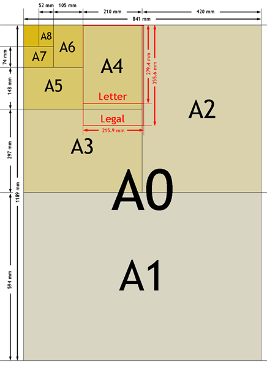
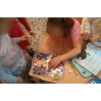

Ilustraciones del texto individual
ACTIVIDAD: Ilustraciones del texto individual
- Duración:
- 120 min
- Agrupamento:
- Individual
En esta tarea el alumnado realizará las ilustraciones de su texto individual, tanto interiores como exteriores. El alumnado deberá intentar que las ilustraciones aporten información complementaria al texto.
- Instrucciones
-
El alumnado deberá elegir, decidiendo libremente en función de sus características y preferencias, tres escenas para su cuento e ilustrarlas con una de las técnicas trabajadas en el aula. Las posibilidades de ilustración son múltiples y variadas.
- Formato
-

Proponemos realizar las ilustraciones en folios formato A5 (un folio normal A4 cortado por la mitad)
- Ilustraciones exteriores:
- Portada
Debe contener como mínimo: título, persona escritora y persona ilustradora (de ser la misma aparecerá una sola vez) - Contraportada
- Portada
- Ilustraciones interiores:
- Situación inicial estable
- Complicación
- Desenlace
- Ilustraciones exteriores:
- Técnicas
-
Podemos proponer alguna técnica específica de ilustración o dejarlo a libertad del alumnado. Las siguientes referencias web pueden resultar interesantes para su consulta:
- Accueil / Hervé Tullet [Internet]. [citado 20 de Junio de 2017]. Disponible en: http://www.herve-tullet.com/
- Pinzellades al món [Internet]. [citado 20 de Junio de 2017]. Disponible en: http://bibliocolors.blogspot.com.es/
- CVC. Cien años de ilustración infantil. Categorías. Técnicas [Internet]. [citado 20 de junio de 2017]. Disponible en: http://cvc.cervantes.es/actcult/ilustracion/tecnicas.htm
- Recopilación de vídeos publicados por el Museo Thyssen
- Evaluación
-
Propuesta para evaluación:
CRITERIOS
4 EXCELENTE
3 SATISFACTORIO
2 MEJORABLE
1 INSUFICIENTE
Ilustraciones
Las ilustraciones tienen relación con las escenas del texto, son muy elaboradas y aportan información complementaria.
Las ilustraciones tienen relación con las escenas del texto y aportan información complementaria.
Las ilustraciones tienen poca relación con las escenas del texto y aportan poca información complementaria.
Las ilustraciones no tienen relación con escenas ni aportan información complementaria.
Proceso de creación de las ilustraciones
 Un variado de materiales puede dar mucho juego.
Un variado de materiales puede dar mucho juego. Independientemente de las propuestas técnicas es importante valorar la libertad en este aspecto más creativo.
Independientemente de las propuestas técnicas es importante valorar la libertad en este aspecto más creativo. Los personajes prinicpales se dibujan en blanco y negro para resaltarlos sobre los demás.
Los personajes prinicpales se dibujan en blanco y negro para resaltarlos sobre los demás. Para los fondos se pueden utilizar plantillas de texturas.
Para los fondos se pueden utilizar plantillas de texturas. Los personajes prinicpales se dibujan en blanco y negro para resaltarlos sobre los demás.
Los personajes prinicpales se dibujan en blanco y negro para resaltarlos sobre los demás. Independientemente de las propuestas técnicas es importante valorar la libertad en este aspecto más creativo.
Independientemente de las propuestas técnicas es importante valorar la libertad en este aspecto más creativo.- Un variado de materiales puede dar mucho juego.


{kind=link}
Dos minutos para pensar
Empezamos ahora con la sexta entrada de nuestro diario de clase con el título "Ilustramos nuestro cuento".

¡Ya tenemos las ilustraciones hechas y estamos cerca del final del trabajo! Antes de continuar podemos contestar juntos a alguna de estas preguntas:
- ¿Qué parte de la tarea te ha resultado más difícil? ¿y más fácil?
- ¿De quién hemos recibido ayuda?
- Cita tres cosas que hayas aprendido.
- ¿Te ha gustado esta actividad?
Además de contestar a estas preguntas, podemos anotar en nuestro Diario las dudas que nos surjan o nuestras reflexiones.
Obra publicada con Licencia Creative Commons Reconocimiento Compartir igual 4.0